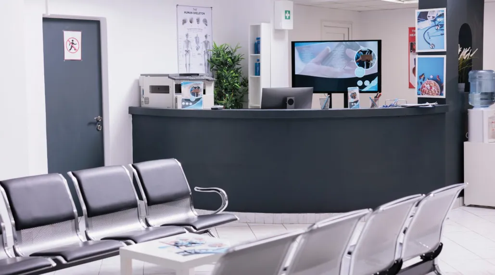

Orlando Health IT Deployment Project
At Orlando Health, I led project teams responsible for imaging new PCs, deploying them across multiple medical centers, and troubleshooting complex issues to ensure smooth rollouts. This included coordinating with clinical staff to minimize downtime, managing deployment schedules, and mentoring technicians on best practices for imaging and hardware installation. By organizing teams of 4–8 members, I helped accelerate deployment timelines while maintaining consistent quality and reliability in a mission-critical healthcare environment.
Skills Learned
- Team leadership and coordination in high-stakes environments
- PC imaging, configuration, and large-scale deployment
- Troubleshooting hardware and network connectivity issues
- Communicating with medical staff to align IT with clinical needs
- Time management and scheduling across multiple sites